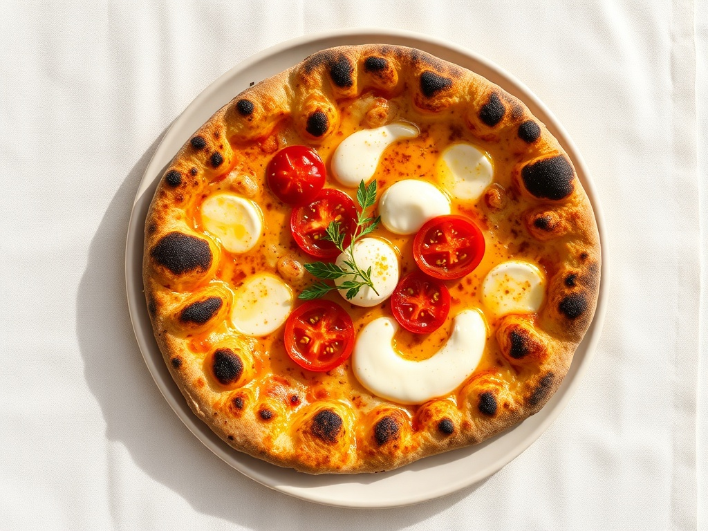
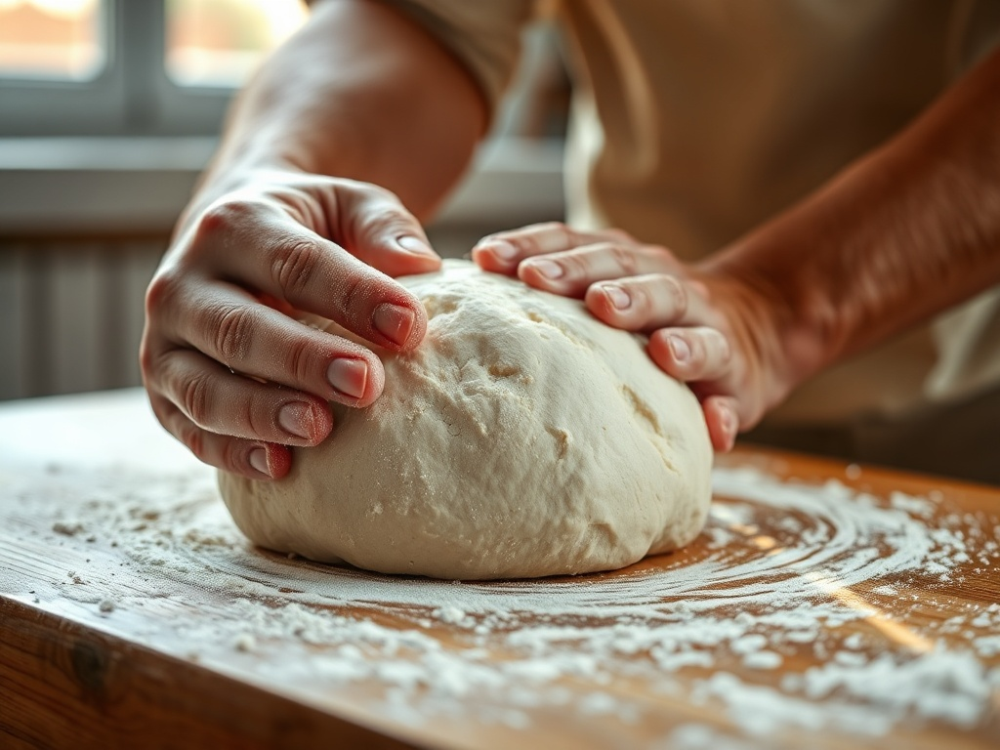
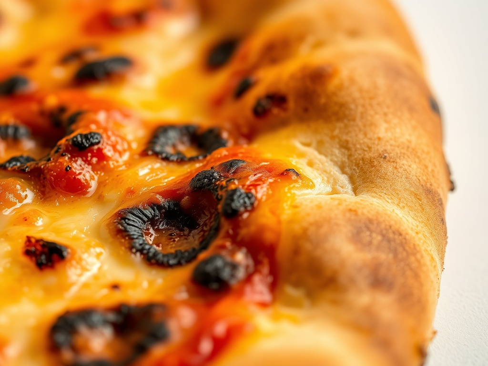
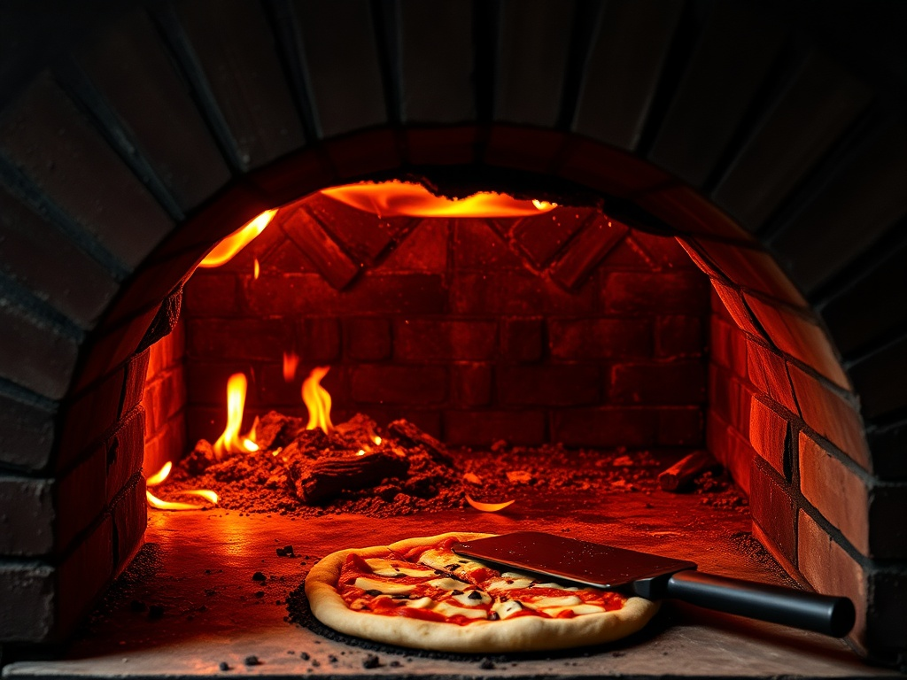
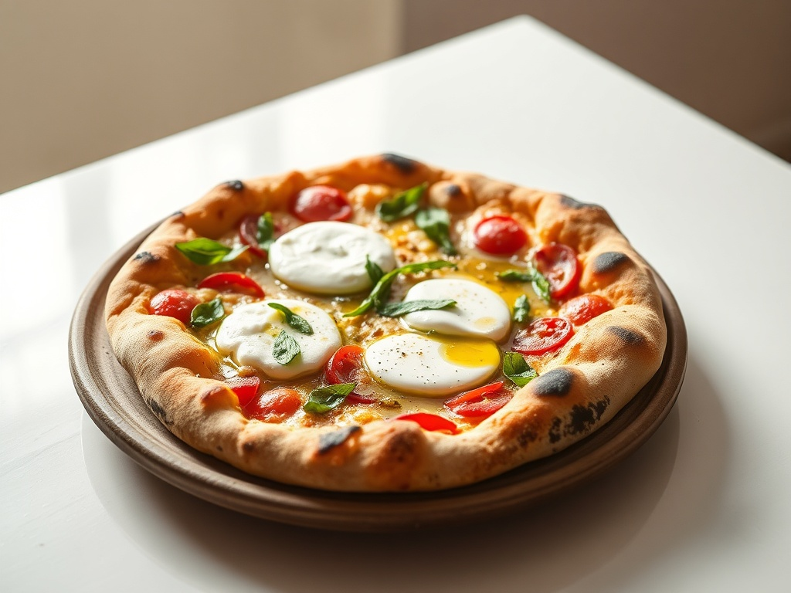
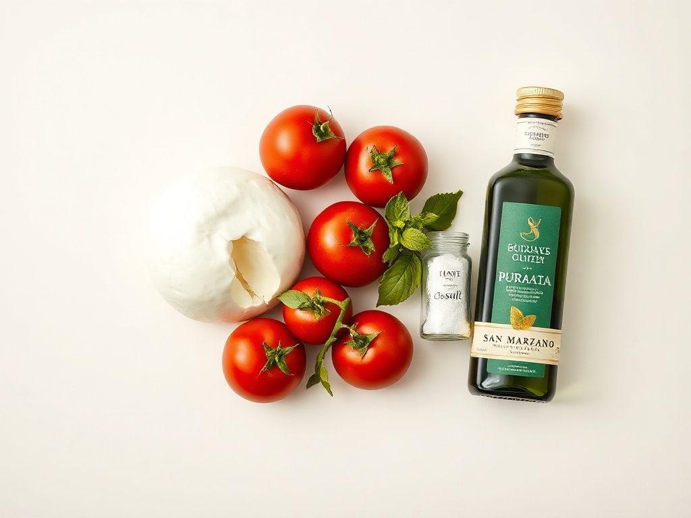
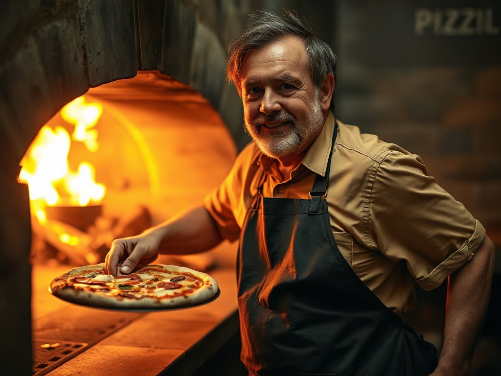
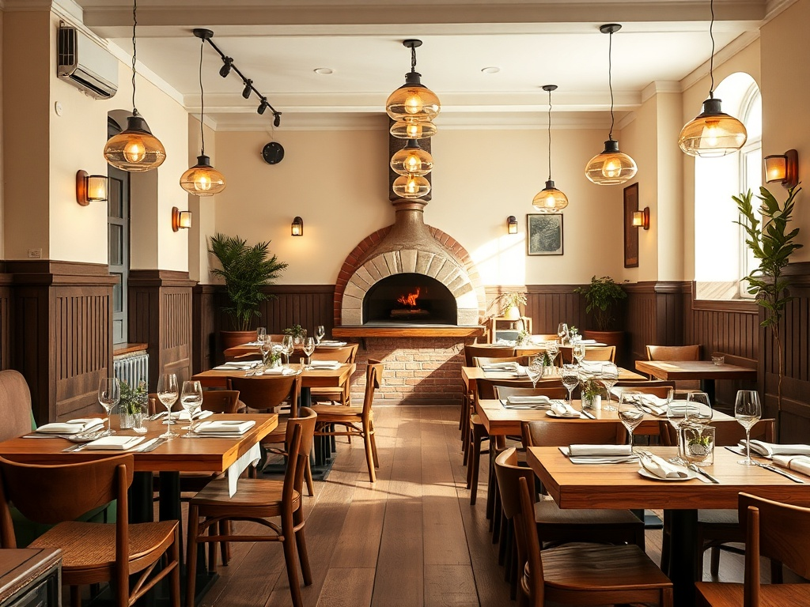
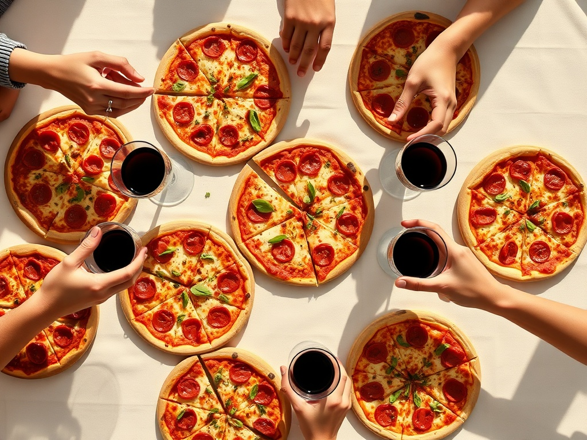

Pizzeria Pugliese · Milano
Ai Muciaccia — Pizzeria Pugliese a Milano

Impasto ad alta idratazione lievitato 48 ore, cotto nel forno a legna. Il cornicione leopardato e gli ingredienti di Puglia — burrata, cime di rapa, San Marzano — portano la mano di Bari a tavola a Milano.
Prenotazioni al telefono · +39 02 4800 0917

01 — L'Impasto
Quarantotto ore di lievitazione, non un minuto di meno.
Tutto parte dalla farina e dal tempo. Il nostro impasto ad alta idratazione riposa per 48 ore a temperatura controllata: una maturazione lenta che rende la pizza leggera, digeribile e profondamente saporita. È il contrario del template napoletano fatto in fretta — è pasta che si lascia aspettare.

Il cornicione leopardatoLe bolle scure sul bordo non sono un difetto: sono la firma di una lunga lievitazione incontrata dal fuoco vivo.

02 — Il Forno
Novanta secondi sopra la fiamma viva.
Il forno a legna è il cuore sensoriale della pizzeria. La temperatura sale oltre i 400°C e la pizza cuoce in poco più di un minuto: il calore secco gonfia il cornicione, brucia appena i bordi e sigilla dentro tutta la fragranza. È qui che il tempo lento dell'impasto incontra il tempo rapido del fuoco.
- 430°La cupola in mattoni tiene il calore costante per una cottura uniforme.
- 90″Il tempo esatto sopra la brace: cornicione alto, fondo croccante.
- La girataOgni pizza viene ruotata sulla pala perché coloni in modo uniforme.
03 — La Carta
Le pizze della casa
Una selezione firmata, con ingredienti di Puglia in evidenza. Ogni pizza nasce dallo stesso impasto lievitato 48 ore e passa dal forno a legna.


Dal Sud, ogni settimana. Burrata e latticini di Andria, olio extravergine del Salento, ortaggi di stagione: la dispensa arriva dalla Puglia, non dal grossista dietro l'angolo.
04 — Puglia a Milano
Il nome Muciaccia è una promessa di provenienza.
Muciaccia è un cognome che a Bari conoscono bene. Da lì viene la nostra idea di pizza: generosa, legata alla terra, fatta con quello che il Sud sa fare meglio. A Milano, dove la maggior parte delle pizzerie ripete un unico canovaccio napoletano, portiamo una mano davvero pugliese — l'impasto, il forno e la dispensa.

05 — Il Pizzaiolo
La mano dietro la pala.
«La pizza buona non si improvvisa: si aspetta. Io do all'impasto il suo tempo, e il forno fa il resto.»
Dietro ogni pizza c'è una persona, non una catena. Il nostro pizzaiolo lavora l'impasto ogni mattina, sorveglia la lievitazione e sta al forno tutta la sera, girando le pizze una a una sulla pala. È questa attenzione — misurata in ore, non in minuti — che tiene la sala piena.
Il pizzaiolo di Ai MuciacciaAl forno, ogni sera di apertura


06 — Il Locale & la prima visita
Un tavolo per due, o per sei.
Una sala calda e informale nel cuore di Milano, con il forno a vista e le luci basse: il posto giusto per una cena del venerdì in due o per una tavolata tra colleghi. Consigliamo di prenotare per il weekend — chiamaci e ti troviamo il tavolo giusto.
Una telefonata e fissiamo giorno, ora e numero di coperti.
Tavolo vicino al forno o angolo tranquillo: lo scegli tu.
Dalla firma alla marinara: ordina e lascia fare al fuoco.
07 — Le Voci
Più di mille passaggi, e la sala resta piena.
Il numero che conta davvero non è solo la media: è il volume. Oltre mille recensioni raccontano una cosa semplice — non è una serata fortunata, è una costanza. La gente torna per l'impasto, per il forno e per quella cucina del Sud che a Milano è più rara di quanto sembri.
Temi ricorrenti sintetizzati dalle recensioni pubbliche, non attribuiti a singole persone.
08 — Prenota & Contatti
Vieni a trovarci a Milano.
Le prenotazioni si fanno al telefono: una chiamata veloce e il tavolo è tuo. Per gruppi e tavolate numerose chiamaci con qualche giorno di anticipo così organizziamo tutto al meglio.
- Telefono +39 02 4800 0917
- Zona Milano — la posizione esatta è confermata al momento della prenotazione.
- Mappa Apri in Google Maps ↗
-
Orari
Lunedì Chiuso Martedì – Venerdì 19:00 – 23:30 Sabato 12:30 – 15:00 · 19:00 – 24:00 Domenica 19:00 – 23:00